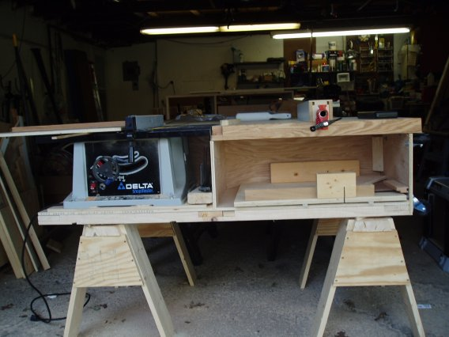

ThunderEagle's Nest

Yes, straight from the New Yankee Workshop, Table Saw Station.
If you have never purchased one of Norm's plans before, be warned, they are really not plans per se, but measured drawings, and that is how they bill them. If you are a newbie, and don't have the episoded taped, get the video as well. This is just the original PBS airing of the show, but it is the only thing that will give you any idea about the techniques used to build the piece in question.
Now, this as given some new found used to my little bench top saw, but I have some gripes about the plans and video. First, you sit down to watch the show and they show the completed station, that is fine and dandy, and then Norm goes into building it. Well, he then proceeds to go over to his Unisaw to make most of the cuts/dados for this station. Nothing wrong with that, except for the fact that I wanted to build this to get a better use out of my saw. So, I found myself yelling at the T.V. "Norm, if I had a FREAKIN' UNISAW, I wouldn't need to build this!" I know Norm is a skilled craftsman, and I feel he could have really done something good for the newbie woodworker by showing us how to build the station on the saw we are going to put in it. That isn't my biggest gripe though. The plans are measured for the saw he used in the episode. That is fine, and I thought I properly adjusted for my saw, but I didn't. It worked out in the end, but the drawings didn't give the dimensions of the saw used, just the Model number. They also didn't say how to adjust the plans. I feel it would have been rather easy for Norm to have put on the drawing 5" + depth of your saw, or something similar. The box to support the saw ended up being much narrower than what it should have been, so I had to add some 2x4 legs to the back part of the station that rest on the sawhorses so it doesn't tip over. My screwup, and I learned from it, but again, it would have been very easy and simple for them to put those instructions in the plan.
The fence does work, but you have to fiddle with it to keep it parallel to the blade, but then again, the fence on the original saw is the same way. A quicksquare goes a long way, as well as measuring from a tooth on the front and back of the blade. If I tighten the fence down too much, it seems to flex inward, not sure if I messed up constructing it, or if that is just the way it is, but I can get about a 39" rip out of it now. The outfeed on the station as well as some adjustable sawhorses with a sheet of MDF on top make it possible for me to rip a full sheet of 4x8 plywood without problems now. Of course, that takes up most of the garage as you can see, but at least I'm making sawdust.
As a side note, the sawhorse he also shows you how to build in the video are really, really sturdy. I'll probably make at least another set. The ones in the picture below are shorter than what Norm calls for, because I didn't want my saw to be higher in the station than it was on the original stand it came with.
